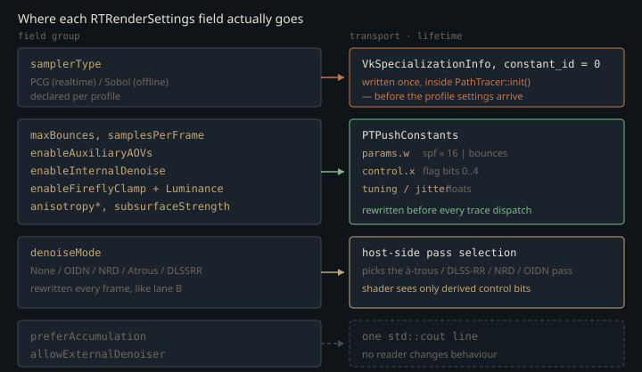

Monograph · Tree · ← Module hub · Profiles & meta
path-tracer
Profiles & meta
RTRenderSettings, Realtime vs Offline traits.
Two constants, and the two things they do not cover
OHAO ships one ray-tracing renderer with two personalities. `PathTracer` has no subclass anywhere in the tree and no `#ifdef` picks a profile: most of the difference between the two is a pair of `constexpr` aggregates in `rt_settings.hpp`.
inline constexpr RTRenderSettings kRealtimeRTSettings{ohao/render/rt/rt_settings.hpp:37Two differences sit outside the aggregates. Each profile object binds its own raygen SPIR-V module, so there genuinely is a separate device code path chosen by which profile is constructed; and each answers one virtual differently. Both come back below.
The realtime profile takes two bounces, a PCG sampler, in-shader spatial denoising, and a firefly clamp at luminance 10. The offline profile takes four bounces, an Owen-scrambled Sobol sampler, no in-shader denoise, no clamp, and OIDN as its default post-process.
The transported 10 is not the operative threshold everywhere. The realtime raygen uses `pc.tuning.x` directly at each NEE and environment contribution, but scales it by 0.75 for the final clamp on accumulated beauty, so that one clamps at 7.5:
float realtimeClamp = pc.tuning.x * 0.75;shaders/rt/pt_raygen_realtime.rgen:1572The offline constant deserves attention for the opposite reason: it does not merely clear the flag, it also zeroes the threshold.
.fireflyClampLuminance = 0.0f,ohao/render/rt/rt_settings.hpp:58That redundancy is deliberate. Every raygen gates the clamp on *both* the flag bit and a positive threshold, so an offline render stays unbiased even if some future caller flips the boolean by accident. Clamping outliers is exactly the kind of variance-for-bias trade an interactive preview wants and a reference render must never make.
The trait layer is a mirror, barely held flat
`rt_meta.hpp` restates the same numbers a second time, as individual `static constexpr` members of `RTProfileTraits<Profile>`. This is genuine duplication — the aggregates are already usable in constant expressions — and the header holds almost none of it in sync. Exactly three `static_assert`s tie a trait back to the aggregate it mirrors: `default_max_bounces` for each profile, and `Offline::default_denoise`.
static_assert(RTProfileTraits<RTRenderProfile::Realtime>::default_max_bounces ==ohao/render/rt/rt_meta.hpp:74The rest can drift unchecked. `default_sampler`, `firefly_clamp_luminance`, `enable_firefly_clamp`, `enable_internal_denoise`, `enable_auxiliary_aovs`, `allow_external_denoiser`, `prefer_accumulation` and `Realtime::default_denoise` are duplicated with no assertion at all — changing the trait below to Sobol compiles clean while `kRealtimeRTSettings` still declares PCG.
static constexpr SamplerType default_sampler = SamplerType::PCG;ohao/render/rt/rt_meta.hpp:44What the duplication is *for* is a type that carries a profile: `RTFeatureFlags<Profile, Mode>` pairs a profile trait with a denoise-mode trait and exposes the pair as compile-time booleans. The aggregate could have carried that weight itself — `makeFeatureSettings` reads and writes `RTRenderSettings` fields directly inside a `constexpr` function guarded by `if constexpr`:
if constexpr (DenoiseModeTraits<Mode>::needs_cpu_readback) {ohao/render/rt/rt_meta.hpp:271And nothing in the shipping engine instantiates any of it. `RTProfileTraits`, `RTFeatureFlags`, `makeProfileSettings<Profile>()` and the wrapper below have their only call sites in `tests/engine/engine_tests.cpp`; a grep over `ohao/` and `examples/` finds none. The engine reaches the two constants directly, through the two object hierarchies the later sections describe.
setRenderSettings(makeFeatureSettings<Profile, Mode>());ohao/render/rt/path_tracer.hpp:198Denoise policy written as a table instead of an if-chain
`DenoiseModeTraits<Mode>` answers nine yes/no questions about a denoiser as `static constexpr bool` members: CPU readback, motion vectors, a diffuse/specular split, sub-pixel jitter, multi-sample AOV means, ownership of temporal accumulation, realtime capability, offline capability, and whether the backend runs on the GPU. They are not independent: `is_gpu_backend` selects the same mode set as `needs_motion_vectors`, {NRD, Atrous, DLSSRR}.
static constexpr bool is_gpu_backend =ohao/render/rt/rt_meta.hpp:140Each is a boolean expression over the mode enum, mirrored by a constexpr free function for runtime callers. Three of them are read directly by the per-frame path — jitter, AOV accumulation, and the fresh-sample rule that forces `historyFrameCount` to zero for SVGF and DLSS-RR.
pc.control.y = freshSample ? 0u : m_historyFrameCount;ohao/render/rt/path_tracer_render.cpp:712Three more feed `applyDenoisePolicy`, which is allowed to override the profile: motion vectors or a diff/spec split force auxiliary AOVs on, and CPU readback raises `allowExternalDenoiser`.
if (denoiseNeedsMotionVectors(s.denoiseMode) || denoiseNeedsDiffSpecSplit(s.denoiseMode)) {ohao/render/rt/rt_meta.hpp:202`applyDenoisePolicy` runs inside `PathTracer::setRenderSettings`, so in principle selecting NRD on a profile that ships with auxiliary AOVs off would turn them on.
m_renderSettings = applyDenoisePolicy(settings);ohao/render/rt/path_tracer.cpp:309In practice it is a no-op on every shipping path. Both profile constants already set `enableAuxiliaryAOVs = true`, and every settings object that reaches `PathTracer` descends from one of the two, so the AOV branch cannot fire; the other branch writes `allowExternalDenoiser`, which nothing reads.
Three traits are decorative. `is_offline_capable` has zero references anywhere in the repository, tests included. `is_realtime_capable` and its runtime wrapper `denoiseIsRealtimeCapable` are exercised only by the engine test suite — nothing in the engine refuses to run OIDN interactively; the CPU readback simply makes it slow. And `needs_cpu_readback`'s single effect is the dead `allowExternalDenoiser` write above.
static constexpr bool is_offline_capable =ohao/render/rt/rt_meta.hpp:135Two transports, two lifetimes
Settings reach the GPU by two mechanisms with very different update rates, and the split is the single most important thing to internalise about this unit.

Nearly everything that can change per frame travels in the 256-byte push-constant block. Bounce count and per-frame sample count share one 32-bit word rather than taking a field each, because the block is already at the size the code fixes as its ceiling:
const uint32_t packedBouncesAndSpf = (spf << 16) | (m_maxBounces & 0xFFFFu);ohao/render/rt/path_tracer_render.cpp:696That ceiling is a compile-time constant asserted against the struct, not a device limit read back from `VkPhysicalDeviceLimits` — `maxPushConstantsSize` occurs in this tree only inside a comment. Vulkan guarantees 128 bytes; 256 is a bet on RT-class hardware that the code makes and never checks.
inline constexpr std::size_t kPTPushConstantsBytes = 256;ohao/gpu/layout_meta.hpp:26Only the realtime raygen unpacks the high half and loops on it; the offline raygen masks it off and traces one path per dispatch.
uint samplesPerFrame = max(pc.params.w >> 16, 1u);shaders/rt/pt_raygen_realtime.rgen:287`denoiseMode` is the field this dichotomy has to admit as an exception. It is rewritten every frame like the rest, but the mode itself takes neither transport: it selects host-side work — which of the à-trous, DLSS-RR, NRD or OIDN passes runs around the trace — and reaches the shader only as derived values, two control bits and the zeroed history count above.
if (m_renderSettings.denoiseMode == DenoiseMode::Atrous && m_atrousDenoiser) {ohao/render/rt/path_tracer_render.cpp:743The sampler choice takes the other route. It is a Vulkan specialization constant baked into the raygen SPIR-V at pipeline creation:
uint32_t samplerTypeVal = static_cast<uint32_t>(m_renderSettings.samplerType);ohao/render/rt/path_tracer_pipeline.cpp:80The sampler dispatch sits in the innermost loop of the tracer — every dimension of every bounce goes through `getSample1D` / `getSample2D`. A push-constant or uniform branch there would be live in every invocation. As a specialization constant the branch folds away entirely during SPIR-V specialization, at the price of making the sampler *pipeline-creation state* rather than per-frame state. That price is real, and the next section is what it cost.
The sampler that never actually switches
`PathTracer::init` builds the RT pipeline as one of its steps, and `createRTPipeline` is called from nowhere else in the class.
if (!createRTPipeline()) {ohao/render/rt/path_tracer.cpp:112But the profile's settings are pushed into the tracer *after* `init` returns — `RTProfileRendererBase::init` calls `setShaderSet`, then `init`, and only then `setRenderSettings`.
m_pathTracer.setShaderSet(m_shaderSet);ohao/render/rt/rt_profile_renderer.hpp:99At the moment the pipeline is created, `m_renderSettings` therefore still holds its default member initializer, which is the offline profile:
RTRenderSettings m_renderSettings{kOfflineRTSettings};ohao/render/rt/path_tracer.hpp:265So both profiles specialize `constant_id = 0` to Sobol. `kRealtimeRTSettings` declares PCG and that value never reaches SPIR-V. The failure is silent because the value that *is* specialized happens to be a usable sampler, not because the shader has a safety net: `createRTPipeline` attaches a `VkSpecializationInfo` with one map entry to every pipeline it builds, so a supplied value always wins.
samplerSpecInfo.mapEntryCount = 1;ohao/render/rt/path_tracer_pipeline.cpp:83The GLSL side declares Sobol as its own default, but that initializer is unreachable in both profiles for exactly that reason:
layout(constant_id = 0) const uint SAMPLER_TYPE = SAMPLER_SOBOL;shaders/includes/rt/sampler_api.glsl:16The consequence is a quality question, not a crash: the realtime profile pays for a QMC sampler it was not designed around. Fixing it means either applying the settings before `init` or recreating the pipeline when `samplerType` changes — the same shape of fix `setRenderSettings` already applies to images when the DLSS render scale moves.
A profile is an object, and it owns a raygen
`RTRealtimeRenderer` and `RTOfflineRenderer` are thin finals over a shared base that wraps a `PathTracer` and forwards over forty accessors. What they genuinely differ on is the constructor's `PathTracerShaderSet`:
"bin/shaders/rt_pt_raygen_offline.rgen.spv",ohao/render/rt/rt_profile_renderer.hpp:220Because both concrete profiles override the shader set and `PathTracer` is only ever instantiated as a member of that base, the struct's default raygen is unreachable in the shipping engine:
const char* raygenSpv{"bin/shaders/rt_pt_raygen.rgen.spv"};ohao/render/rt/path_tracer.hpp:55`shaders/rt/pt_raygen.rgen` is still compiled — the shader CMake globs the directory — but nothing binds its SPIR-V. Treat it as the common ancestor the two profile raygens diverged from, not as a live third profile.
What the two finals actually decide
`RTProfileRendererBase` implements the forwarding, and leaves four pure virtuals to the finals: `getName`, `getProfile`, `getDefaultSettings` and `resetsAccumulationOnViewChange`. The first three return identity and constants, and `IRTRendererProfile::getDefaultSettings` has no callers at all. The profiles' real payload — the settings aggregate and the shader set — is not virtual: it is handed up through the base constructor.
RTProfileRendererBase(RTRenderSettings settings, PathTracerShaderSet shaderSet)ohao/render/rt/rt_profile_renderer.hpp:90Only the fourth virtual changes behaviour, and what it decides is what a camera move means.
if (resetsAccumulationOnViewChange()) {ohao/render/rt/rt_profile_renderer.hpp:181Offline answers yes and hard-resets — sample index back to the render seed, history counters to zero, NRD's previous matrices to identity. Realtime answers no:
bool resetsAccumulationOnViewChange() const override { return false; }ohao/render/rt/rt_profile_renderer.hpp:212and instead raises a per-frame flag that the raygen reads as a temporal bootstrap hint. Keeping the accumulation buffer alive across a camera move is what makes an interactive viewport usable; throwing it away is what makes a reference render correct.
What the per-frame reset stomps
There is a second profile hierarchy, and this is where it surfaces. `IRTRenderPipeline` — `RTRealtimePipeline`, `RTOfflinePipeline` — is a stateless description of a mode rather than a renderer: four const methods, no Vulkan objects, held by value on `VulkanRenderer`. It shares three method names with `IRTRendererProfile` and nothing else.
class RTRealtimePipeline final : public IRTRenderPipeline {ohao/render/rt/rt_render_pipeline.hpp:17Per frame, `prepareRTSceneForFrame` overwrites the renderer's settings with that pipeline object's defaults before doing anything else. The values come from the pipeline; the profile renderer's identically-named `getDefaultSettings` is not what supplies them.
m_rtSettings = pipeline.getDefaultSettings();ohao/gpu/vulkan/renderer.cpp:525Only anisotropy strength, anisotropy rotation and subsurface strength are carried across that assignment; `applyRTRenderSettings` then re-injects the interactive sample count and — for Atrous and DLSS-RR only — the user's `--denoise` override. Anything else set through `setRTRenderSettings`, `maxBounces` most obviously, never survives to a dispatch at all: `renderRTPipeline` calls `prepareRTSceneForFrame` first and records the trace afterwards, so the value is overwritten before any raygen can read it.
prepareRTSceneForFrame(pipeline, false);ohao/gpu/vulkan/render_dispatch.cpp:149The profile constants are authoritative every frame, not just at startup. A knob that is not on the explicit preserve list is not a setting, it is a value discarded before the next dispatch reads it. The sampler is the mirror image: it is authoritative once, at init, and currently authoritative with the wrong profile's value.
Contracts
- Both profile renderers are created lazily by `ensureRTRenderer` and released only in `VulkanRenderer::shutdown`. Switching modes at runtime leaves two full `PathTracer` instances resident, each owning its own set of over twenty screen-sized storage images (roughly half of them RGBA32F), and `forEachRTRenderer` re-uploads materials, textures and lights to both.
- `setRenderSettings` must be called between frames, never inside a command buffer: a change of DLSS render scale makes it wait on device idle and reallocate every render target.
- `preferAccumulation` and `allowExternalDenoiser` exist in the struct and in the traits, but no code reads them to change behaviour — they appear only in the profile log line. Do not add logic that assumes they are already honoured. {{cite ohao/gpu/vulkan/renderer.cpp "externalDenoiser="}}
- The offline profile's freedom from firefly clamping depends on two independent conditions (flag clear, threshold zero). Restoring the struct default of 10.0 without also clearing the flag would silently bias reference renders. {{cite ohao/render/rt/path_tracer_render.cpp "if (m_renderSettings.enableFireflyClamp) pc.control.x |= kPTFlagEnableFireflyClamp;"}}
Source files
ohao/render/rt/rt_settings.hppshaders/rt/pt_raygen_realtime.rgenohao/render/rt/rt_meta.hppohao/render/rt/path_tracer.hppohao/render/rt/path_tracer_render.cppohao/render/rt/path_tracer.cppohao/gpu/layout_meta.hppohao/render/rt/path_tracer_pipeline.cppohao/render/rt/rt_profile_renderer.hppshaders/includes/rt/sampler_api.glslohao/render/rt/rt_render_pipeline.hppohao/gpu/vulkan/renderer.cppohao/gpu/vulkan/render_dispatch.cppParent hub for the full pipeline narrative; this page is the file-level design unit. Sitemap · hover glossary terms anywhere.